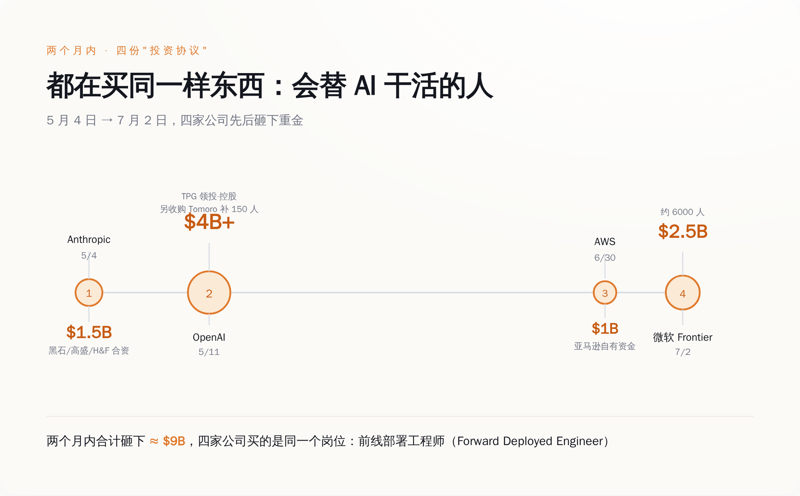

AI 这门生意，第一天打出的卖点就是「不用人」。两个月里，卖 AI 的四家大厂——OpenAI、Anthropic、AWS、微软——一共凑了 90 多亿美元，成立四家公司，干的是同一件事：把工程师一队一队派进你公司，替 AI 干活。
6 月 30 日，AWS 掏出 10 亿美元，成立一个专门团队，活儿只有一样：把工程师派进客户公司，现场帮客户把 AI 跑起来。
两天后，7 月 2 日，微软宣布成立「Frontier Company」，25 亿美元，6000 个人，同一件事——派人进客户公司，守着 AI 干活。
往前翻两个月。5 月 4 日 Anthropic，拉上黑石、高盛，凑了 15 亿；5 月 11 日 OpenAI，40 多亿，TPG 领投。四家公司招牌上写着同一个词：Forward Deployed Engineer，前线部署工程师。
翻译过来是：卖你 AI 的人，改行了，改卖「能让 AI 开机的人」。
四家加起来，90 多亿美元。这笔钱不是拿去训更强的模型，是拿去雇人——雇一群人，坐进你的办公室，盯着他们卖给你的那个 AI，别让它当场趴窝。

图注：两个月，四家大厂，90 多亿美元，做同一件事：派人替 AI 干活
Forward Deployed Engineer 这个词，2026 年突然铺天盖地，但它不是新的。发明它的是 Palantir，时间是 2005 年前后，客户是 CIA、NSA 和美国陆军情报部门。
当年 Palantir 遇到一个死结：情报机构要做数据系统，但出于保密，客户没法跟供应商说清楚自己到底要什么。传统那套「先调研需求、回去远程开发、做完再交付」的做法，直接失灵——因为需求这一步就卡死了。
Palantir 的解法简单粗暴：不调研了，把工程师直接塞进客户的涉密机房，让他们蹲在现场，一边看客户怎么干活、一边试、一边改，边看边把系统搭出来。「Forward Deployed」本身是军语，指部署在作战区附近、随时能上的部队。到 2016 年前后，Palantir 内部这种全栈工程师的人数，一度超过了普通写产品的软件工程师。
二十年后，这套打法被搬到了「给企业装 AI」上。但搬的时候，病换了。Palantir 当年派人进去，是因为客户说不清自己要什么——问题出在需求侧，产品本身是能打的。这次四家派人进去，是因为产品已经卖出去了、却还跑不动——问题出在供给侧。
同样是派活人蹲进客户公司，Palantir 补的是「你到底要什么」，这四家补的是「我卖给你的东西，怎么才能开机」。前者叫定制交付，后者有个更难听的说法，叫兜底。四家大厂集体请出 FDE，等于集体承认了同一件事：AI 卖得出去，但落不了地——客户不会用、不敢用、用不好，得有原厂的人蹲在旁边扶着。